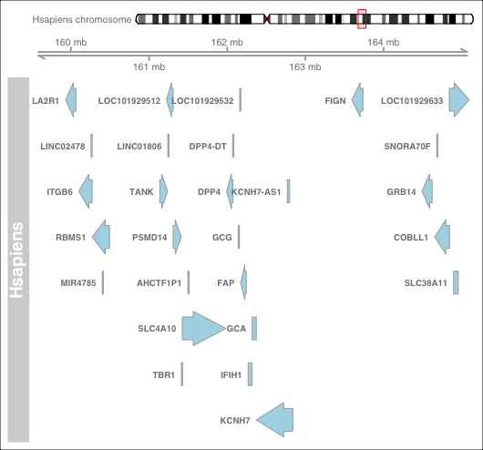

What is SyntenyViz
SyntenyViz is a R package to visualise synteny across various biological species.
Motivation
Visualising the synteny across species not only enables intuitive examination and facilitates reconstruction effort of ancestral genomes, but also allow more direct interrogation of gene regulations and gene structures within a gene cluster.
Installation
Install from RStudio
- Install and load
devtoolsinstall.packages("devtools") library(devtools) - Install and load
SyntenyVizfromGitHubinstall_github("DPP4ResearchGroup/SyntenyViz") library(SyntenyViz)
To allow build vignettes, build_vignettes = TRUE options can be used as
install_github("DPP4ResearchGroup/SyntenyViz", build_vignettes = TRUE)
library(SyntenyViz)
Developing version can be accessed via develop as
install_github("DPP4ResearchGroup/SyntenyViz", ref = "develop")
library(SyntenyViz)
Quick Start for the Impatient
Quick and minimum steps to get started with a synteny conservation analysis using SyntenyViz.
Define an investigation range
We need to first define an investigation range to cover the target range in gene coordinates. We will use a mouse dipeptidyl dipeptidase 4 gene (DPP4-mm) in this example, where DPP4-mm locates at chromosome number 2 between 62,330,073-62,412,231 bp.
# orgm is a handle for organism
orgmName <- "Mmusculus"
# mycoords.list is the investigation range handler
mycoords <- "2:6.0e7:6.5e7"
Convert coordinates into a GRange object
mycoords.gr <- SyntenyViz::coordFormat(mycoords.list = mycoords)
It is always a good habit to double check the input, so:
mycoords.gr
Construct a single synteny graph
synvizPlot(mycoords.gr, orgmName)

Construct a multi-synteny graph
Pick a few targets:
orgm.1 <- "Hsapiens"
mycoords.list.1 <- "2:15.95e7:16.45e7"
orgm.2 <- "Mmusculus"
mycoords.list.2 <- "2:6.0e7:6.5e7"
orgm.3 <- "Rnorvegicus"
mycoords.list.3 <- "3:4.6e7:5.1e7"
Then construct a multiple synteny query:
orgmsList <- orgmsCollection.init(orgmsList)
orgmsList <- orgmsAdd(orgm.1, orgmTxDB, mycoords.list.1, orgmsList)
orgmsList <- orgmsAdd(orgm.2, orgmTxDB, mycoords.list.2, orgmsList)
orgmsList <- orgmsAdd(orgm.3, orgmTxDB, mycoords.list.3, orgmsList)
Now, construct a comparative multi-synteny graph:
multiplot <- multisynvizPlots(orgmsList)

Examples
SyntenyViz also includes training material, which can be accessed via vignettes from RStudio:
install_github("DPP4ResearchGroup/SyntenyViz", build_vignettes = TRUE)
browseVignettes("SyntenyViz")
OR a PDF can be accessed from the SyntenyViz homepage.
Contribution
- Fork to your contributing account
- Create your feature branch (
git checkout -b my-new-feature) - Commit your changes (
git commit -am 'Added some feature') - Push to the feature branch (
git push origin my-new-feature) - Create a new PR
Issue Tracking
Issues and bugs can be raised and tracked through the GitHub issue tracker for SyntenyViz.
Unit Testing
Travis CI testing implements R CMD check. The function integrity is checked by R native testthat, which can also be invoked by utility function devtools::test() from RStudio.